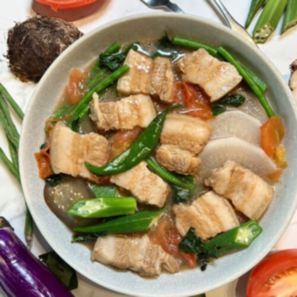
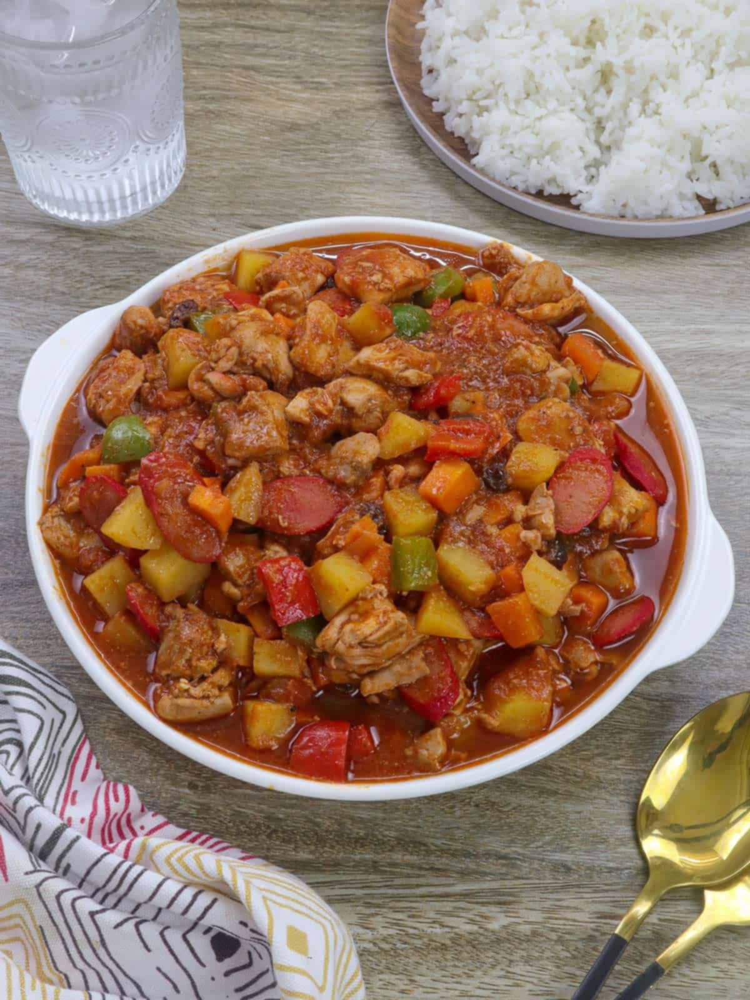

Classic Pinoy Favourites

Sinigang
A flavorful and tangy Filipino soup known for its sour broth, made with tamarind and tomatoes.
★
★

Menudo
A rich stew with pork, liver, potatoes, carrots, bell peppers, and raisins in tomato sauce.

Adobo
A savory Filipino dish braised in vinegar and soy sauce — flavorful, tangy, and iconic.
★
★

Sisig
A sizzling Filipino dish made from chopped pork with spicy, tangy flavor.